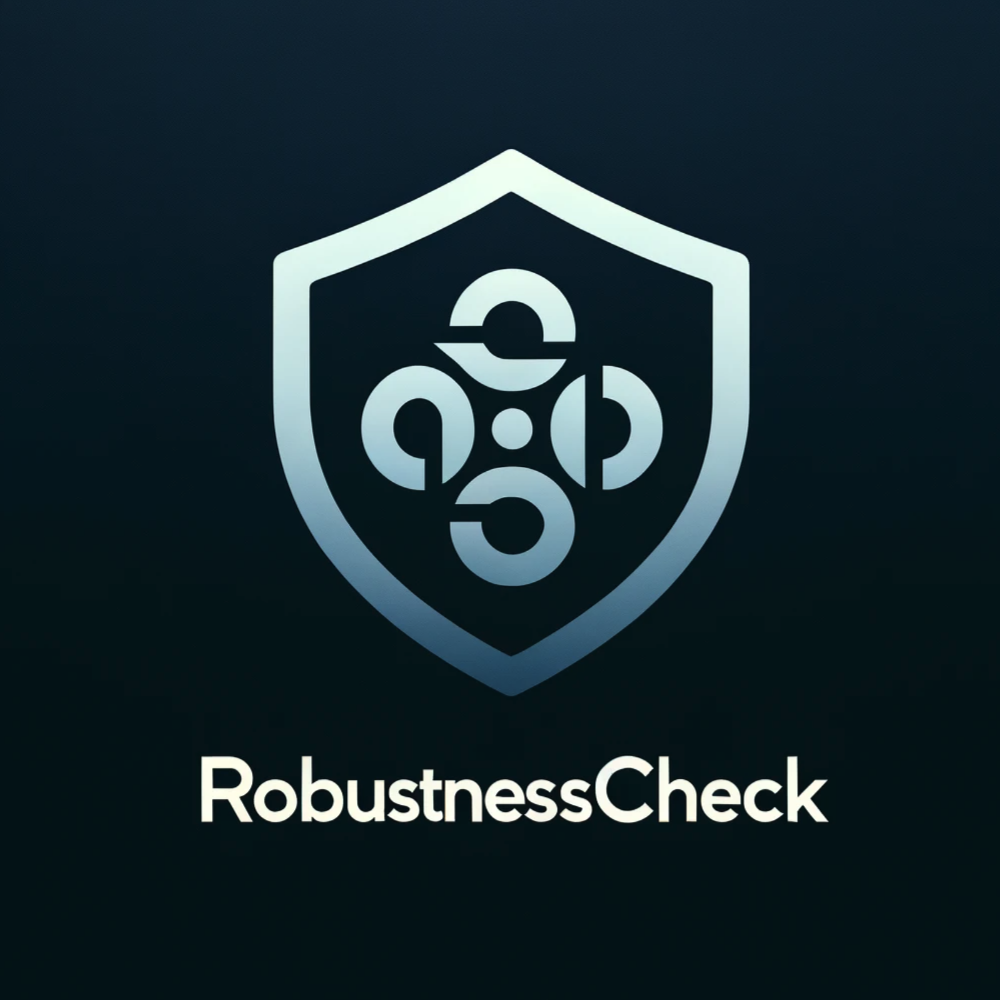

RobustCheck documentation¶
{kind=link}
RobustnessCheck is a Python package designed for evaluating the robustness of image classification machine learning models. It provides tooling to apply simple, yet effective and efficient black-box untargeted adversarial attacks against models that expose a batch predict function that outputs probability distributions.
Check out the Usage section for getting started, including how to install the package.
Robustness metrics introduces the main robustness metrics that RobustCheck generates.
RobustnessCheck API provides the documentation for the main functionality of our package.
Dumping robustness check results provides the documentation for the functions used to save the robustness assessment results.
Main content:
The black-box, untargeted adversarial attacks used for robustness assessment are EvoBA, which is a peer-reviewed and published approach [1], and EpsGreedy, which is a variation of EvoBA following the classic Epsilon-Greedy exploration strategy.
We provide the documentation for the underlying adversarial attacks that RobustCheck uses to generate the robustness metrics.
Adversarial attacks documentation:
EvoStrategyUniformUntargeted and EpsilonGreedyUntargeted are the adversarial attacks
used by RobustCheck. We provide an abstract class UntargetedAttack that both of the attacks
implement. Developers interested to extend RobustCheck via the addition of other relevant
adversarial attacks are encouraged to do it by providing new implementations of
UntargetedAttack.
We further provide EvoStrategy, a generic abstract class for evolutionary search strategies.
EvoStrategyUniformUntargeted implements both this and UntargetedAttack. We believe that
there are many other evolutionary strategies that would fulfill the efficiency and effectiveness
criteria required by the RobustCheck package, therefore we encourage potential contributors to
consider adding attacks that implement both EvoStrategy and UntargetedAttack.
Indices and tables¶
Bibliography¶
[1] Neural Information Processing: 28th International Conference, ICONIP 2021, Sanur, Bali, Indonesia, December 8–12, 2021, Proceedings, Part III